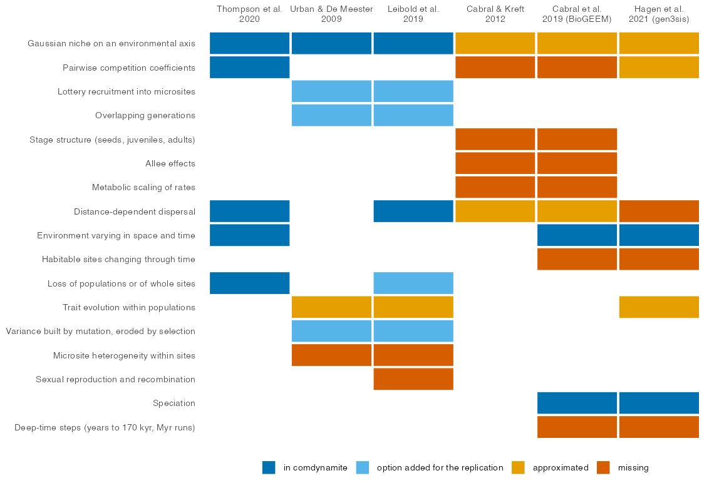

Mechanistic models in community ecology and biogeography differ less
in their aims than in the processes they include and the level at which
they represent them (Cabral, Valente & Hartig 2017). A general
simulator invites the claim that it contains the models before it, but
reproducing a pattern qualitatively is not the same as nesting a model:
two models can reach the same pattern through different mechanisms, and
a model can contain the structure of another and still fail to reproduce
its results. comdynamite is therefore not an all-encompassing model. It
is a modular framework in the sense of Cabral, Valente & Hartig
(2017), centred on populations and quantitative genetics in ecological
time, with speciation inside a competitive metacommunity and an
inference layer with known truth. This article maps six published models
onto it: which settings approximate each model, which mechanisms it
lacks, and what happened when we tried to reproduce the results. The
detailed extraction, with the location of every item in its source, is
in dev/nesting-map.md.
The six models
| Model | Level and time scale | Status in comdynamite |
|---|---|---|
| Thompson et al. (2020) | Populations, ecological time | Native: the engine implements its equations; validated against analytical results, mcomsimr and the article (article) |
| Urban & De Meester (2009) | Individuals with loci, ecological time | Replicated in part (article) |
| Leibold et al. (2019) | Individuals with loci, ecological time | Replicated in part (article) |
| Cabral & Kreft (2012) | Stage-structured populations, ecological time | Ecological analogue only; not run |
| Cabral, Wiegand & Kreft (2019), BioGEEM | Stage-structured populations, deep time on an island | Out of scope: weak analogue, not run |
| Hagen et al. (2021), gen3sis | Species as sets of populations, deep time | Out of scope: partial analogue, not run |

Thompson et al. (2020)
The engine was written from the equations of Thompson et al. (2020):
Beverton-Holt growth with Lotka-Volterra competition, a Gaussian niche
on one environmental variable that varies in space and time, binomial
emigration with an exponential dispersal kernel, and stochastic
extirpation of populations. Their model is therefore a special case of
simulate_metacommunity() without evolution. The validation
found no difference from mcomsimr, the implementation of the same
authors, in 160 comparisons, but it also found that the article and its
archived code differ in several points that change the results, so the
text alone does not reproduce the figures (article).
Urban & De Meester (2009)
Their model follows individuals with 20 haploid loci, clonal
inheritance, lottery recruitment into 1000 microsites per patch and a
baseline mortality of 0.1 per step. With pool_from for the
colonisation delay and mutation_var for a genetic variance
held by each population, the engine reproduced two results: a species
that evolves by mutation wins a new site whatever the order of arrival,
and evolution in both species makes the new site more often dominated by
one species. Three mechanisms were then added as options and crossed:
lottery recruitment (recruitment = "lottery"), overlapping
generations (mortality < 1) and the erosion of the
variance by selection (variance_selection). Erosion by
selection restored the priority effect of standing variation, and
overlapping generations restored the advantage of the better disperser
when both species evolve; lottery recruitment alone changed nothing. The
weak priority effect with mutation and the loss of the source population
at low rather than high dispersal remain unexplained (article).
Leibold et al. (2019)
Their model shares the individual-based genetics of Urban & De
Meester (2009), with sexual reproduction, on a grid of two patch types
with patch extinction. With disturbance for the patch
extinctions and Lande evolution, the engine reproduced their main
result: when local adaptation is fast, both species adapt to both patch
types and patch type stops predicting composition while it still
predicts traits. It did not reproduce their local dominance, the
monopolisation of patches by either species. Immigrant selection, a
variance that depends on population size, lottery recruitment,
overlapping generations and a variance built from new mutations, with or
without erosion by selection, were tested in turn, and none produced it.
The outcome seems to be set by the regime of genetic variance rather
than by recruitment: a constant variance led to the loss of one species,
a variance maintained by mutation to shared patches, and a variance
built from zero to species sorting (article). Microsite heterogeneity
and recombination are the mechanisms of their model still missing.
Cabral & Kreft (2012)
This model shares the population level and the ecological time scale, but its demography is built differently: three life stages with yearly binomial transitions, rates scaled by body mass and temperature through metabolic theory, competition for space with self-thinning in a phenological order, Allee effects, and a fat-tailed dispersal kernel. Its triangular thermal niche and its kernel can be approximated by a Gaussian niche and an exponential kernel with per-species parameters, and an equal competition matrix scaled per species can mimic space pre-emption. The stages, metabolic scaling and Allee effects have no counterpart, so a comparison could only test its community-level patterns, such as the mid-elevation peak of richness and the gap between realised and potential ranges, and would be an analogue rather than a replication. We did not run it.
Cabral, Wiegand & Kreft (2019), BioGEEM
BioGEEM extends the model of Cabral & Kreft (2012) to an island
that grows, stays stable and erodes over 2.21 million yearly steps, with
immigration from a mainland, cladogenesis by point mutation with
protracted speciation, and anagenesis delayed by gene flow from the
mainland. speciation_control(mode = "point") with
completion > 0 and jump_var > 0
approximates the protracted cladogenesis, and env_time can
change the environment of sites, but the changing number of habitable
cells, the metabolic rates of mutation and speciation and the deep-time
schedule are missing. Conversely, BioGEEM has no quantitative genetics,
so the two models overlap little. Its code has no license, so it was
read but not used.
Hagen et al. (2021), gen3sis
gen3sis is an engine rather than a model: its speciation, dispersal,
evolution and ecology are functions written by the user, on landscapes
whose habitable sites and connection costs change over tens of millions
of years in steps of about 170 thousand years. Geographic speciation by
accumulated divergence, reset by gene flow, has a direct counterpart in
speciation_control(mode = "geographic", divergence = "gradual"),
and a carrying capacity shared by all species can be approximated by
equal competition coefficients. Trait evolution by Brownian motion at
the level of species has no direct switch; Lande evolution with drift
and flat selection is the closest. Cost-distance dispersal and changing
landscapes are missing. The two engines are complementary rather than
nested: gen3sis is built for deep time, whereas comdynamite is built for
populations and quantitative genetics in ecological time.
What the map shows
The two models closest to comdynamite in level and time scale are the ones that could be replicated, and both replications departed from the original results in ways that the added mechanisms explained only in part. This seems to be the general lesson of the map: matching structure is necessary but not sufficient, because results of individual-based models depend on how genetic variance is generated and lost, which a quantitative-genetic engine represents only through its assumptions about the variance. The deep-time models are out of scope by design, and the stage-structured models of Cabral and colleagues would require a demographic module that the package does not have.
What could not be verified
The distribution of species optima and the kernel strength of Thompson et al. (2020) are not in the main text. For Urban & De Meester (2009), the supplementary figures were not accessible, and for Leibold et al. (2019) only Table S2 of the supplement was read. Cabral & Kreft (2012) was read from the Early View version, where some exponents and signs were lost in text extraction, and its Appendix S1 was not read; nor were the appendices of Cabral et al. (2019) or the supplementary notes of Hagen et al. (2021). The settings proposed for the last three models were written from the function signatures and were not run.
References
Cabral, J. S., & Kreft, H. (2012). Linking ecological niche, community ecology and biogeography: insights from a mechanistic niche model. Journal of Biogeography, 39, 2212–2224. https://doi.org/10.1111/jbi.12010
Cabral, J. S., Valente, L., & Hartig, F. (2017). Mechanistic simulation models in macroecology and biogeography: state-of-art and prospects. Ecography, 40, 267–280. https://doi.org/10.1111/ecog.02480
Cabral, J. S., Wiegand, K., & Kreft, H. (2019). Interactions between ecological, evolutionary and environmental processes unveil complex dynamics of insular plant diversity. Journal of Biogeography, 46, 1582–1597. https://doi.org/10.1111/jbi.13606
Hagen, O., Flück, B., Fopp, F., Cabral, J. S., Hartig, F., Pontarp, M., Rangel, T. F., & Pellissier, L. (2021). gen3sis: A general engine for eco-evolutionary simulations of the processes that shape Earth’s biodiversity. PLOS Biology, 19, e3001340. https://doi.org/10.1371/journal.pbio.3001340
Leibold, M. A., Urban, M. C., De Meester, L., Klausmeier, C. A., & Vanoverbeke, J. (2019). Regional neutrality evolves through local adaptive niche evolution. Proceedings of the National Academy of Sciences, 116, 2612–2617. https://doi.org/10.1073/pnas.1808615116
Thompson, P. L., Guzman, L. M., De Meester, L., Horváth, Z., Ptacnik, R., Vanschoenwinkel, B., Viana, D. S., & Chase, J. M. (2020). A process-based metacommunity framework linking local and regional scale community ecology. Ecology Letters, 23, 1314–1329. https://doi.org/10.1111/ele.13568
Urban, M. C., & De Meester, L. (2009). Community monopolization: local adaptation enhances priority effects in an evolving metacommunity. Proceedings of the Royal Society B, 276, 4129–4138. https://doi.org/10.1098/rspb.2009.1382